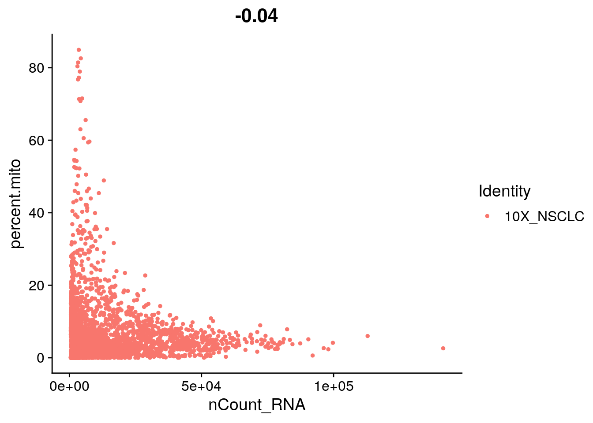
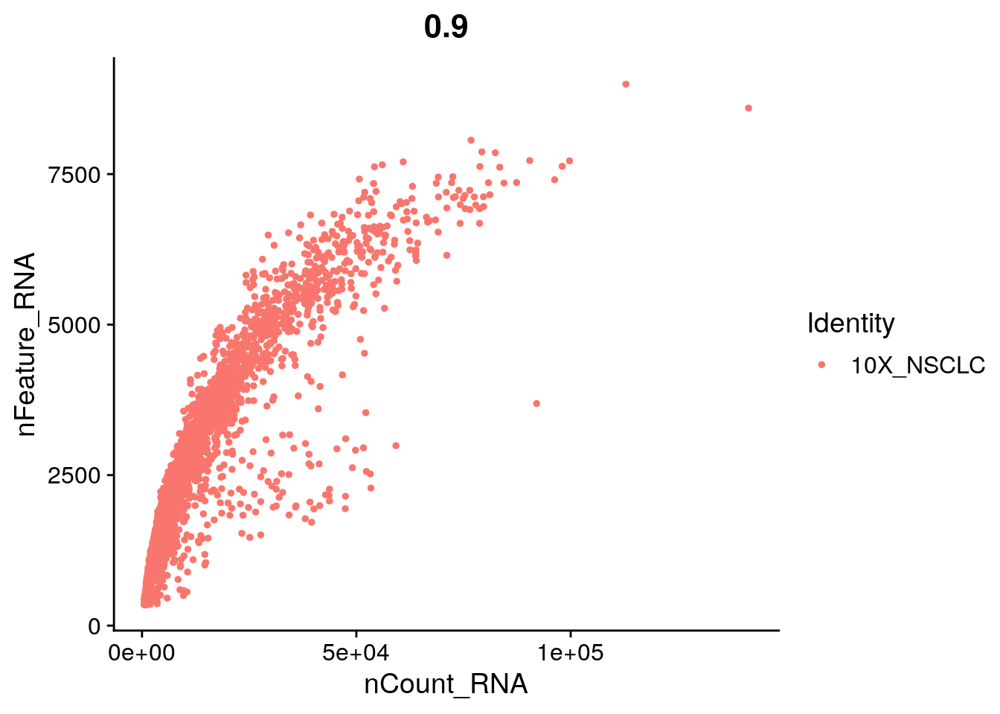
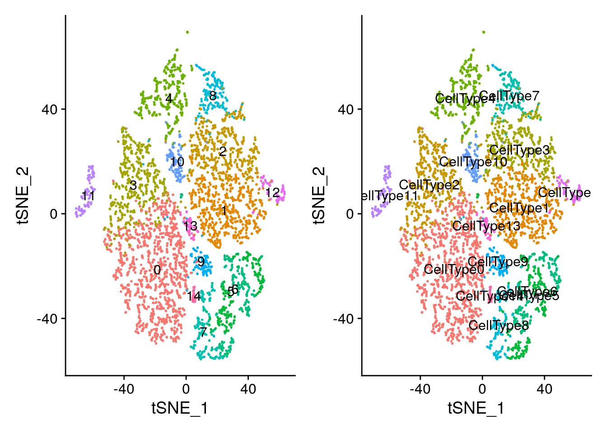
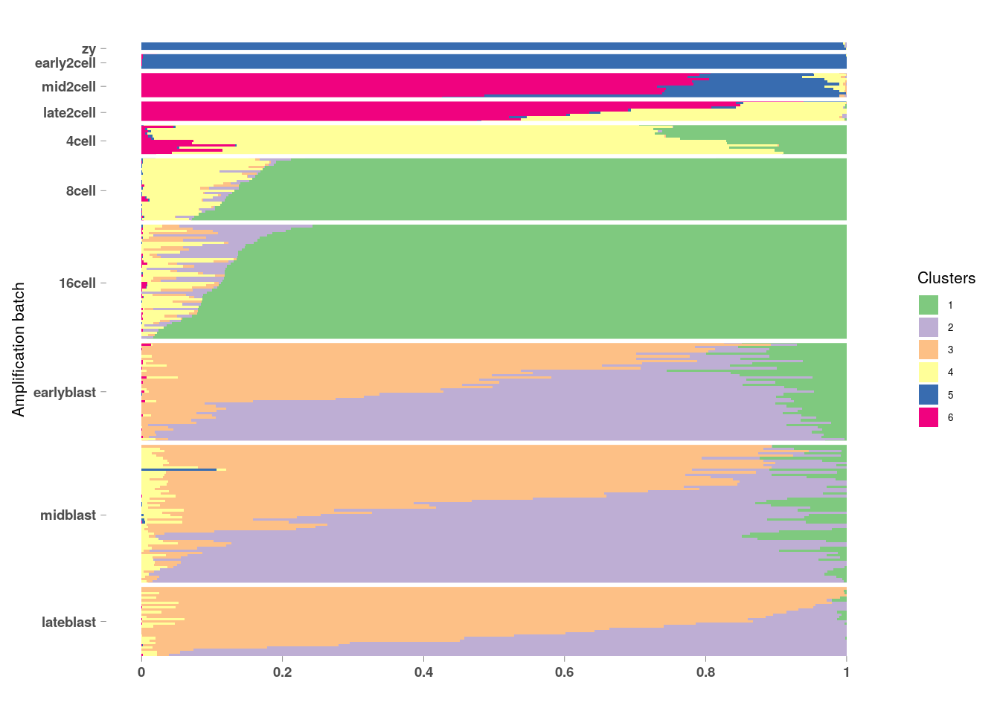
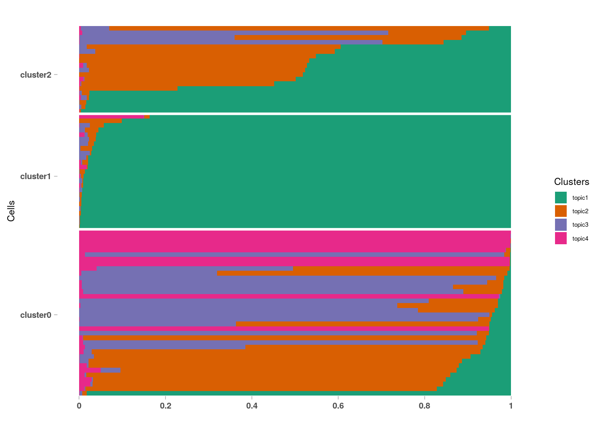
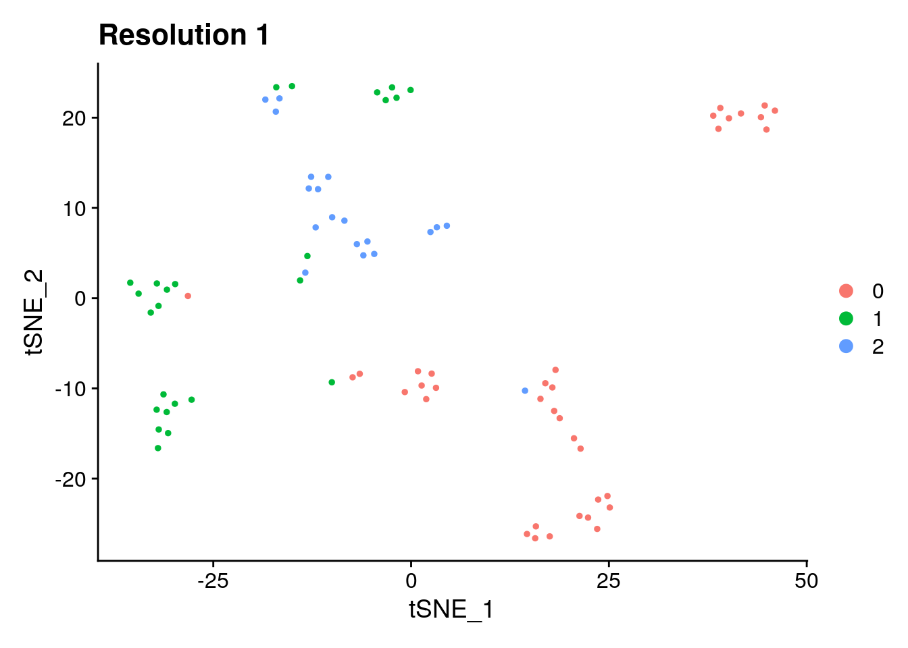
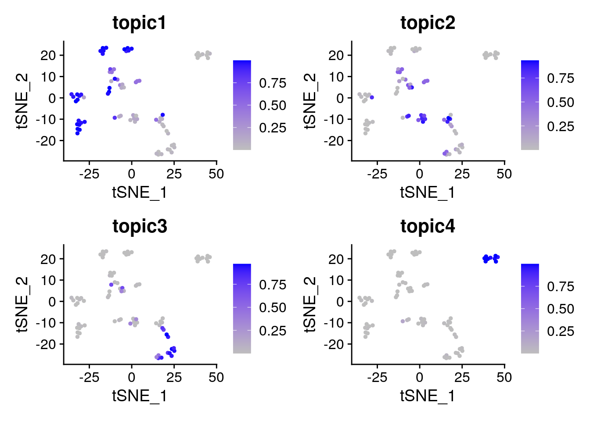
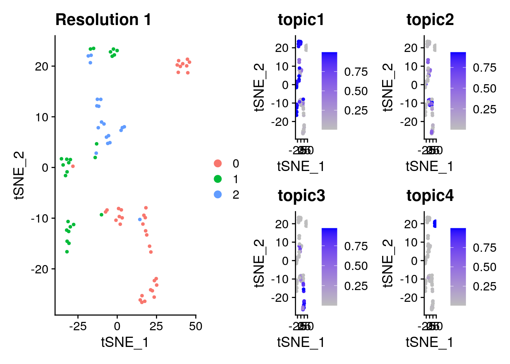

10 Feature Selection and Cluster Analysis
10.1 Abstract
Many methods have been used to determine differential gene expression from single-cell RNA (scRNA)-seq data. We evaluated 36 approaches using experimental and synthetic data and found considerable differences in the number and characteristics of the genes that are called differentially expressed. Prefiltering of lowly expressed genes has important effects, particularly for some of the methods developed for bulk RNA-seq data analysis. However, we found that bulk RNA-seq analysis methods do not generally perform worse than those developed specifically for scRNA-seq. We also present conquer, a repository of consistently processed, analysis-ready public scRNA-seq data sets that is aimed at simplifying method evaluation and reanalysis of published results. Each data set provides abundance estimates for both genes and transcripts, as well as quality control and exploratory analysis reports. (???)
Cells are the basic building blocks of organisms and each cell is unique. Single-cell RNA sequencing has emerged as an indispensable tool to dissect the cellular heterogeneity and decompose tissues into cell types and/or cell states, which offers enormous potential for de novo discovery. Single-cell transcriptomic atlases provide unprecedented resolution to reveal complex cellular events and deepen our understanding of biological systems. In this review, we summarize and compare single-cell RNA sequencing technologies, that were developed since 2009, to facilitate a well-informed choice of method. The applications of these methods in different biological contexts are also discussed. We anticipate an ever-increasing role of single-cell RNA sequencing in biology with further improvement in providing spatial information and coupling to other cellular modalities. In the future, such biological findings will greatly benefit medical research. (???)
10.2 Seurat Tutorial Redo
For this tutorial, we will be analyzing the a dataset of Non-Small Cell Lung Cancer Cells (NSCLC) freely available from 10X Genomics (https://support.10xgenomics.com/single-cell-vdj/datasets/2.2.0/vdj_v1_hs_nsclc_5gex), using the Seurat R package (http://satijalab.org/seurat/), a popular and powerful set of tools to conduct scRNA-seq analysis in R. In this dataset, there are 7802 single cells that were sequenced on the Illumina NovaSeq 6000. Please note this tutorial borrows heavily from Seurat’s tutorials, so feel free to go through them in more detail.
Task: Check the dirname to directory where you saved your data
##
## Attaching package: 'dplyr'## The following objects are masked from 'package:stats':
##
## filter, lag## The following objects are masked from 'package:base':
##
## intersect, setdiff, setequal, unionlibrary(ggplot2)
library(CountClust)
dirname <- "data/"
counts_matrix_filename = paste0(dirname, "filtered_gene_bc_matrices/GRCh38/")
counts <- Read10X(data.dir = counts_matrix_filename) # Seurat function to read in 10x count data## Using the first 1000 cells for computational efficiency
seurat <- CreateSeuratObject(counts = counts, min.cells = 3, min.features = 350, project = "10X_NSCLC")## Warning: Feature names cannot have underscores ('_'), replacing with dashes
## ('-')10.2.1 Preprocessing Steps
This was all covered in Dana’s Lab!
# The number of genes and UMIs (nFeature_RNA nCount_RNA) are automatically calculated
# for every object by Seurat. For non-UMI data, nCount_RNA represents the sum of
# the non-normalized values within a cell We calculate the percentage of
# mitochondrial genes here and store it in percent.mito using AddMetaData.
# We use object@raw.data since this represents non-transformed and
# non-log-normalized counts The % of UMI mapping to MT-genes is a common
# scRNA-seq QC metric.
# Load the the list of house keeping genes
hkgenes <- read.table("data/resources/tirosh_house_keeping.txt", skip = 2)
hkgenes <- as.vector(hkgenes$V1)
# remove hkgenes that were not found
hkgenes.found <- which(toupper(rownames(seurat@assays$RNA@data)) %in% hkgenes)
n.expressed.hkgenes <- sum(seurat@assays$RNA@data[hkgenes.found, ] > 0)
## Add to Seurat Meta Data
seurat <- AddMetaData(object = seurat, metadata = n.expressed.hkgenes, col.name = "n.exp.hkgenes")
seurat[["percent.mito"]] <- PercentageFeatureSet(object = seurat, pattern = "^MT-")
##VlnPlot(object = seurat, features = c("nFeature_RNA", "nCount_RNA", "percent.mt"), ncol = 3)# FeatureScatter is typically used to visualize gene-gene relationships, but can
# be used for anything calculated by the object, i.e. columns in
# object@meta.data, PC scores etc. Since there is a rare subset of cells
# with an outlier level of high mitochondrial percentage and also low UMI
# content, we filter these as well
par(mfrow = c(1, 2))
FeatureScatter(object = seurat, feature1 = "nCount_RNA", feature2 = "percent.mito")

# We filter out cells that have unique gene counts over 4,000 or less than
# 350 Note that low thresholds and high thresholds are used to define a
# 'gate'. -Inf and Inf should be used if you don't want a lower or upper
# threshold.
seurat <- subset(seurat, subset = nFeature_RNA > 350 &
nFeature_RNA < 4000 &
percent.mito < 15 &
n.exp.hkgenes > 55)# Read in a list of cell cycle markers, from Tirosh et al, 2015.
# We can segregate this list into markers of G2/M phase and markers of S phase.
s.genes <- Seurat::cc.genes$s.genes
s.genes <- s.genes[s.genes %in% rownames(seurat)] # genes in dataset
g2m.genes <- Seurat::cc.genes$g2m.genes
g2m.genes <- g2m.genes[g2m.genes %in% rownames(seurat)] # genes in dataset
seurat <- CellCycleScoring(object = seurat,
s.features = s.genes,
g2m.features = g2m.genes,
set.ident = TRUE)10.2.2 Start of Identifying Cell Types
10.2.2.1 Scaling
This part is where you mean center the data, substract the mean. You also divide by the standard deviation to make everything to a ‘standard normal’, where the mean is zero and the standard deviation is 1.
## Regressing out percent.mito## Centering and scaling data matrixTask: Try Regressing Other Variables
set.seed(2020) ## used for reporducibility
## randomly making a batch id data.frame
batch_ids <- data.frame(barcode = rownames(seurat@meta.data),
batch_id = sample(0:2, NROW(seurat@meta.data), replace = TRUE),
stringsAsFactors = FALSE)
## naming batch ids by cell names
row.names(batch_ids) <- row.names(seurat@meta.data)
## adding batch ids to the meta data
seurat <- AddMetaData(object = seurat, metadata = batch_ids, col.name = NULL)
## try different variables to regress
seurat <- ScaleData(object = seurat, vars.to.regress = '??')10.2.2.2 Perform linear dimensional reduction (PCA)
This will run pca on the just the variable features found.
seurat <- RunPCA(object = seurat,
features = seurat@assays$RNA@var.features,
ndims.print = 1:5,
nfeatures.print = 5)## PC_ 1
## Positive: CD74, IRF8, IGHA1, CCR7, TNF
## Negative: IFITM3, CST3, KRT7, S100A11, S100A9
## PC_ 2
## Positive: LYZ, AIF1, TYROBP, FCER1G, SERPINA1
## Negative: KRT7, KRT17, SLPI, FXYD3, C19orf33
## PC_ 3
## Positive: HLA-DRA, CD74, HLA-DRB1, HLA-DQB1, HLA-DPA1
## Negative: TPSD1, CPA3, TPSAB1, TPSB2, MS4A2
## PC_ 4
## Positive: HLA-DQA1, HLA-DRA, HLA-DQB1, HLA-DPA1, HLA-DPB1
## Negative: IL32, CD7, GZMA, NKG7, PRF1
## PC_ 5
## Positive: S100A12, SPRR1B, S100A8, SPRR2A, RDH10
## Negative: IGFBP7, GAS6, SFRP1, CALD1, HTRA1
10.2.2.4 Perform linear dimensional reduction (ICA)
Task: Try running Independent Component Analysis. If you need help with the inputs try using the ?RunICA menu.
10.2.2.5 Visualizing ICA in Different Ways
# ProjectDim scores each gene in the dataset (including genes not included
# in the PCA) based on their correlation with the calculated components.
# Though we don't use this further here, it can be used to identify markers
# that are strongly correlated with cellular heterogeneity, but may not have
# passed through variable gene selection. The results of the projected PCA
# can be explored by setting use.full=T in the functions above
seurat <- ProjectDim(object = seurat, reduction = "pca")## PC_ 1
## Positive: CD74, IRF8, IGHA1, CCR7, TNF, ITM2A, CCL5, RP5-887A10.1, RP11-731F5.2, PIM2
## CD7, HERPUD1, HLA-DQA1, KIAA0125, STAG3, GZMA, KLRB1, HLA-DPA1, AC079767.4, IGKC
## Negative: IFITM3, CST3, KRT7, S100A11, S100A9, TACSTD2, SLPI, GSTP1, LGALS3, APLP2
## CLDN7, ELF3, GLUL, KRT19, SERINC2, PTGES, S100P, RAC1, FXYD3, S100A6
## PC_ 2
## Positive: LYZ, AIF1, TYROBP, FCER1G, SERPINA1, FCGR2A, MS4A6A, CD14, CSF1R, CPVL
## SPI1, CD68, FPR1, FTL, FCGRT, CD163, PILRA, C1orf162, CLEC7A, LILRB2
## Negative: KRT7, KRT17, SLPI, FXYD3, C19orf33, PERP, ELF3, S100P, TACSTD2, PTGES
## KRT19, RPS18, DSP, LCN2, KRT18, KLF5, CLDN7, SERPINB3, AQP3, GPRC5A
## PC_ 3
## Positive: HLA-DRA, CD74, HLA-DRB1, HLA-DQB1, HLA-DPA1, HLA-DQA1, HLA-DPB1, IRF8, HLA-DRB5, CD24
## CYBB, RAB31, FCGR2B, RNASE6, KYNU, S100A12, FCN1, S100A8, S100A9, BCL2A1
## Negative: TPSD1, CPA3, TPSAB1, TPSB2, MS4A2, GATA2, HPGDS, SLC18A2, KIT, HDC
## RP11-354E11.2, IL1RL1, VWA5A, CNRIP1, RP11-32B5.7, MAOB, CLU, LTC4S, HPGD, RGS13
## PC_ 4
## Positive: HLA-DQA1, HLA-DRA, HLA-DQB1, HLA-DPA1, HLA-DPB1, HLA-DRB1, IRF8, CD74, HLA-DRB5, CD24
## C1orf186, ALOX5, FCGR2B, CD1C, IGHA1, RP5-887A10.1, RP11-731F5.2, HPGDS, DERL3, SLC18A2
## Negative: IL32, CD7, GZMA, NKG7, PRF1, CCL5, CTSW, CST7, KLRB1, CD8A
## IL2RB, CCL4, KLRD1, GNLY, ID2, MT2A, TRBC1, TIGIT, SIRPG, GZMH
## PC_ 5
## Positive: S100A12, SPRR1B, S100A8, SPRR2A, RDH10, MUC4, PDZK1IP1, ERO1A, ADGRF1, PRSS22
## MALAT1, RNF39, S100A9, SLC6A14, SPRR3, SCEL, DHRS9, SLC26A9, ELF3, TMPRSS11D
## Negative: IGFBP7, GAS6, SFRP1, CALD1, HTRA1, SOD3, NNMT, IGFBP4, MSLN, SERPINF1
## IGFBP2, CAV1, PCSK1, FBLN1, BCAM, DST, ADIRF, CPE, TUSC3, PPP1R14A10.2.2.6 Genes by PCs

Check other PCs to plot
Task: Check other PCs
seurat <- JackStraw(object = seurat, reduction = "pca")
seurat <- ScoreJackStraw(seurat, dims = 1:20)
# save.SNN = T saves the SNN so that the clustering algorithm can be rerun
# using the same graph but with a different resolution value (see docs for
# full details)
set.seed(2020)
seurat <- FindNeighbors(object = seurat, dims = 1:10)## Computing nearest neighbor graph## Computing SNNseurat <- FindClusters(object = seurat,
reduction = "pca",
dims = 1:10,
resolution = 0.6,
random.seed = 2020)## Warning: The following arguments are not used: reduction, dims
## Warning: The following arguments are not used: reduction, dims## Modularity Optimizer version 1.3.0 by Ludo Waltman and Nees Jan van Eck
##
## Number of nodes: 6187
## Number of edges: 202352
##
## Running Louvain algorithm...
## Maximum modularity in 10 random starts: 0.8875
## Number of communities: 15
## Elapsed time: 0 seconds10.2.3 Run non-linear dimensional reduction (UMAP/tSNE)
Seurat offers several non-linear dimensional reduction techniques, such as tSNE and UMAP, to visualize and explore these datasets. The goal of these algorithms is to learn the underlying manifold of the data in order to place similar cells together in low-dimensional space. Cells within the graph-based clusters determined above should co-localize on these dimension reduction plots. As input to the UMAP and tSNE, we suggest using the same PCs as input to the clustering analysis.
Task: Look up and tune hyperparameters of the tSNE. (hint: ?RunTSNE)
seurat <- RunTSNE(seurat, reduction.use = "pca", dims.use = 1:10, perplexity=10)
# note that you can set do.label=T to help label individual clusters
DimPlot(object = seurat, reduction = "tsne")
Task: Try using UMAP for the non-linear dimension reduction technique (hint: ?RunUMAP)
set.seed(2020)
seurat <- RunUMAP()
# note that you can set label=TRUE to help label individual clusters
DimPlot()10.2.3.1 Finding differentially expressed features (cluster biomarkers)
Seurat can help you find markers that define clusters via differential expression. By default, it identifes positive and negative markers of a single cluster (specified in ident.1), compared to all other cells. FindAllMarkers automates this process for all clusters, but you can also test groups of clusters vs. each other, or against all cells.
The min.pct argument requires a feature to be detected at a minimum percentage in either of the two groups of cells, and the thresh.test argument requires a feature to be differentially expressed (on average) by some amount between the two groups. You can set both of these to 0, but with a dramatic increase in time - since this will test a large number of features that are unlikely to be highly discriminatory. As another option to speed up these computations, max.cells.per.ident can be set. This will downsample each identity class to have no more cells than whatever this is set to. While there is generally going to be a loss in power, the speed increases can be significiant and the most highly differentially expressed features will likely still rise to the top.
# find all markers of cluster 1 using default parameters
cluster1.markers <- FindMarkers(object = seurat,
ident.1 = 1,
min.pct = 0.1)
head(cluster1.markers)Task: Try tuning different parameters. How does that affect results?
# find all markers distinguishing cluster 5 from clusters 0 and 1
cluster5.markers <- FindMarkers(object = seurat,
ident.1 = 5, ident.2 = c(0, 1),
min.pct = ??
only.pos = ??)
head(cluster5.markers)cluster3.markers <- FindMarkers(object = seurat,
ident.1 = 3,
thresh.use = 0.25,
only.pos = TRUE)
head(cluster3.markers)# you can plot raw UMI counts as well
VlnPlot(object = seurat,
features = c("NKG7", "PF4"),
log = TRUE)# find markers for every cluster compared to all remaining cells, report
# only the positive ones
nsclc.markers <- FindAllMarkers(object = seurat, only.pos = TRUE, min.pct = 0.25, thresh.use = 0.25)
nsclc.markers %>% group_by(cluster) %>% top_n(2, avg_logFC)FeaturePlot(object = seurat,
features = c("MS4A1", "GNLY", "CD3E", "CD14", "FCER1A", "FCGR3A", "LYZ", "PPBP", "CD8A"),
cols = c("grey", "blue"),
reduction = "tsne")top10 <- nsclc.markers %>% group_by(cluster) %>% top_n(10, avg_logFC)
# setting slim.col.label to TRUE will print just the cluster IDS instead of
# every cell name
DoHeatmap(object = seurat, features = top10$gene, label = TRUE)## pbmc markers
# new.cluster.ids <- c("Memory CD4 T", "Naive CD4 T", "CD14+ Mono", "B", "CD8 T",
# "FCGR3A+ Mono", "NK", "DC", "Mk")
## making generic cell type names
new.cluster.ids <- paste0("CellType", levels(seurat@active.ident))
names(x = new.cluster.ids) <- levels(x = seurat)
seurat <- RenameIdents(object = seurat, new.cluster.ids)
DimPlot(object = seurat, reduction = 'tsne', label = TRUE, pt.size = 0.5) + NoLegend()10.2.3.2 Further subdivisions within cell types
If you perturb some of our parameter choices above (for example, setting resolution=0.8 or changing the number of PCs), you might see cells subdivide into two groups. You can explore this subdivision to find markers separating the two cell subsets. However, before reclustering (which will overwrite object@ident), we can stash our renamed identities to be easily recovered later.
# First lets stash our identities for later
seurat[["ClusterNames_0.6"]] <- Idents(object = seurat)
# Note that if you set save.snn=T above, you don't need to recalculate the
# SNN, and can simply put: seurat <- FindClusters(seurat, resolution = 0.8)
seurat <- FindClusters(object = seurat,
reduction = "pca",
dims = 1:10,
resolution = 0.8)## Warning: The following arguments are not used: reduction, dims
## Warning: The following arguments are not used: reduction, dims## Modularity Optimizer version 1.3.0 by Ludo Waltman and Nees Jan van Eck
##
## Number of nodes: 6187
## Number of edges: 202352
##
## Running Louvain algorithm...
## Maximum modularity in 10 random starts: 0.8664
## Number of communities: 15
## Elapsed time: 0 seconds## Warning in BuildSNN(object = object, genes.use = genes.use, reduction.type
## = reduction.type, : Build parameters exactly match those of already
## computed and stored SNN. To force recalculation, set force.recalc to TRUE.
# Demonstration of how to plot two tSNE plots side by side, and how to color
# points based on different criteria
plot1 <- DimPlot(object = seurat,
reduction= "tsne",
label = TRUE) + NoLegend()
plot2 <- DimPlot(object = seurat,
reduction = "tsne",
group.by = "ClusterNames_0.6",
label = TRUE) + NoLegend()
# patchwork system
plot1 + plot2
10.3 Feature Selection
10.3.1 Differential Expression Analysis
10.3.1.1 Differential Expression Tests
One of the most commonly performed tasks for RNA-seq data is differential gene expression (DE) analysis. Although well-established tools exist for such analysis in bulk RNA-seq data, methods for scRNA-seq data are just emerging. Given the special characteristics of scRNA-seq data, including generally low library sizes, high noise levels and a large fraction of so-called ‘dropout’ events, it is unclear whether DE methods that have been developed for bulk RNA-seq are suitable also for scRNA-seq. Check the help page out for the FindMarkers function by using ?FindMarkers
## Differential expression using t-test
FindMarkers(object = seurat, ident.1 = 0, ident.2 = 1, test.use = "t")Task: Try to use different test for diffential expression analysis (hint: ?FindMarkers)
10.3.2 Check Clusters
How do we test the cell types identified? How do we know how reliable they are?
Use Classifier to predict cell cluster. See how it predicts using hold out data. reference
# Assign the test object a three level attribute
groups <- sample(c("train", "test"), size = NROW(seurat@meta.data), replace = TRUE, prob = c(0.8, 0.2))
names(groups) <- colnames(seurat)
seurat <- AddMetaData(object = seurat, metadata = groups, col.name = "group")
# Find Anchors
seurat.list <- SplitObject(seurat, split.by = "group")
seurat.anchors <- FindIntegrationAnchors(object.list = seurat.list, dims = 1:30)## Computing 2000 integration features## Scaling features for provided objects## Finding all pairwise anchors## Running CCA## Merging objects## Finding neighborhoods## Finding anchors## Found 4721 anchors## Filtering anchors## Retained 4410 anchors## Extracting within-dataset neighbors## Merging dataset 2 into 1## Extracting anchors for merged samples## Finding integration vectors## Finding integration vector weights## Integrating data## Warning: Adding a command log without an assay associated with itseurat.query <- seurat.list[["train"]]
seurat.anchors <- FindTransferAnchors(reference = seurat.integrated,
query = seurat.query,
dims = 1:30)## Performing PCA on the provided reference using 2000 features as input.## Projecting PCA## Finding neighborhoods## Finding anchors## Found 13510 anchors## Filtering anchors## Retained 10980 anchors## Extracting within-dataset neighborspredictions <- TransferData(anchorset = seurat.anchors,
refdata = seurat.integrated$ClusterNames_0.6,
dims = 1:30)## Finding integration vectors## Finding integration vector weights## Predicting cell labelsseurat.query <- AddMetaData(seurat.query, metadata = predictions)
table(seurat.query@meta.data$ClusterNames_0.6, seurat.query@meta.data$predicted.id)##
## 0 1 10 11 12 13 14 2 3 4 5 6 7 8 9
## 0 1273 0 0 0 0 0 0 23 0 0 0 0 0 0 0
## 1 0 734 0 0 1 0 0 0 13 1 1 0 0 0 0
## 2 447 0 0 0 0 1 0 131 0 0 0 0 0 0 0
## 3 0 44 0 0 0 1 0 0 478 0 0 0 13 0 0
## 4 1 0 2 0 0 0 0 0 0 407 0 0 0 0 0
## 5 0 0 0 0 0 0 0 0 0 0 243 5 0 1 0
## 6 0 0 0 0 0 0 0 0 0 0 2 254 0 3 0
## 7 0 0 0 0 0 0 0 0 17 0 0 0 174 0 0
## 8 0 1 0 0 0 0 1 1 1 0 0 2 0 169 1
## 9 0 0 0 0 0 0 0 0 0 0 0 0 0 0 127
## 10 1 1 118 0 0 0 0 0 0 8 0 0 0 0 0
## 11 0 0 0 121 0 0 0 0 0 0 0 0 0 0 0
## 12 0 51 0 0 13 2 0 1 13 0 0 0 1 0 0
## 13 10 3 0 0 0 50 0 0 2 0 0 0 0 0 0
## 14 0 0 0 0 0 0 37 0 0 0 0 0 0 0 010.3.3 View Entire Object Structure
Notice all the slots and elements added to the object.
10.4 Probabilistic (LDA) Clustering
Another type of clustering we can do is a fuzzy or probablistic clustering. This is where cells are not assigned to specifically only one cluster. They get assigned a score for how much the cells belong to each of the clusters (sometimes called topics). This can be helpful for when your dataset continuous processes and/or cellular states as opposed to distinct cell types.
10.4.1 Example LDA in Bulk
## [1] "clust_3" "clust_6"omega <- MouseDeng2014.FitGoM$clust_6$omega
annotation <- data.frame(
sample_id = paste0("X", c(1:NROW(omega))),
tissue_label = factor(rownames(omega),
levels = rev(c("zy", "early2cell", "mid2cell", "late2cell",
"4cell", "8cell", "16cell", "earlyblast", "midblast", "lateblast")))
)
rownames(omega) <- annotation$sample_id;
StructureGGplot(omega = omega,
annotation = annotation,
palette = RColorBrewer::brewer.pal(8, "Accent"),
yaxis_label = "Amplification batch",
order_sample = TRUE,
axis_tick = list(axis_ticks_length = .1,
axis_ticks_lwd_y = .1,
axis_ticks_lwd_x = .1,
axis_label_size = 7,
axis_label_face = "bold"))## Warning: Use of `df_mlt$document` is discouraged. Use `document` instead.## Warning: Use of `df_mlt$value` is discouraged. Use `value` instead.## Warning: Use of `df_mlt$topic` is discouraged. Use `topic` instead.
10.4.2 PBMC LDA
10.4.2.1 Fitting the Model
set.seed(2020)
## Preprocessing Steps
pbmc_small <- NormalizeData(object = pbmc_small, normalization.method = "LogNormalize", scale.factor = 10000)
pbmc_small <- RunPCA(object = pbmc_small)## Warning in irlba(A = t(x = object), nv = npcs, ...): You're computing too large
## a percentage of total singular values, use a standard svd instead.## PC_ 1
## Positive: SDPR, PF4, PPBP, TUBB1, CA2, TREML1, MYL9, PGRMC1, RUFY1, PARVB
## VDAC3, IGLL5, AKR1C3, CD1C, RP11-290F20.3, GNLY, S100A8, S100A9, HLA-DQA1, HLA-DPB1
## Negative: HLA-DPB1, HLA-DQA1, S100A9, S100A8, GNLY, RP11-290F20.3, CD1C, AKR1C3, IGLL5, VDAC3
## PARVB, RUFY1, PGRMC1, MYL9, TREML1, CA2, TUBB1, PPBP, PF4, SDPR
## PC_ 2
## Positive: HLA-DPB1, HLA-DQA1, S100A8, S100A9, CD1C, RP11-290F20.3, PARVB, IGLL5, MYL9, SDPR
## PPBP, CA2, RUFY1, TREML1, PF4, TUBB1, PGRMC1, VDAC3, AKR1C3, GNLY
## Negative: GNLY, AKR1C3, VDAC3, PGRMC1, TUBB1, PF4, TREML1, RUFY1, CA2, PPBP
## SDPR, MYL9, IGLL5, PARVB, RP11-290F20.3, CD1C, S100A9, S100A8, HLA-DQA1, HLA-DPB1
## PC_ 3
## Positive: S100A9, S100A8, RP11-290F20.3, AKR1C3, PARVB, GNLY, PPBP, PGRMC1, MYL9, TUBB1
## CA2, TREML1, SDPR, VDAC3, PF4, RUFY1, HLA-DPB1, IGLL5, CD1C, HLA-DQA1
## Negative: HLA-DQA1, CD1C, IGLL5, HLA-DPB1, RUFY1, PF4, VDAC3, SDPR, TREML1, CA2
## TUBB1, MYL9, PGRMC1, PPBP, GNLY, PARVB, AKR1C3, RP11-290F20.3, S100A8, S100A9
## PC_ 4
## Positive: IGLL5, RP11-290F20.3, VDAC3, PPBP, TUBB1, TREML1, PF4, CA2, PARVB, MYL9
## SDPR, RUFY1, PGRMC1, S100A9, HLA-DQA1, HLA-DPB1, GNLY, S100A8, AKR1C3, CD1C
## Negative: CD1C, AKR1C3, S100A8, GNLY, HLA-DPB1, HLA-DQA1, S100A9, PGRMC1, RUFY1, SDPR
## MYL9, PARVB, CA2, PF4, TREML1, TUBB1, PPBP, VDAC3, RP11-290F20.3, IGLL5
## PC_ 5
## Positive: MYL9, PARVB, IGLL5, TREML1, AKR1C3, PGRMC1, HLA-DPB1, S100A9, TUBB1, PF4
## SDPR, GNLY, PPBP, S100A8, CA2, HLA-DQA1, CD1C, RUFY1, RP11-290F20.3, VDAC3
## Negative: VDAC3, RP11-290F20.3, RUFY1, CD1C, HLA-DQA1, CA2, S100A8, PPBP, GNLY, SDPR
## PF4, TUBB1, S100A9, HLA-DPB1, PGRMC1, AKR1C3, TREML1, IGLL5, PARVB, MYL9pbmc_small <- FindClusters(object = pbmc_small,
reduction = "pca",
dims.use = 1:10,
resolution = 1,
print.output = 0)## Warning: The following arguments are not used: reduction, dims.use, print.output## Suggested parameter: dims instead of dims.use; verbose instead of print.output## Warning: The following arguments are not used: reduction, dims.use, print.output## Suggested parameter: dims instead of dims.use; verbose instead of print.output## Modularity Optimizer version 1.3.0 by Ludo Waltman and Nees Jan van Eck
##
## Number of nodes: 80
## Number of edges: 3124
##
## Running Louvain algorithm...
## Maximum modularity in 10 random starts: 0.1433
## Number of communities: 3
## Elapsed time: 0 seconds## Warning: Adding a command log without an assay associated with it## Grab the Raw Count Matrix from Seurat Object
## Needs count matrix
pbmc_counts <- as.matrix(pbmc_small@assays$RNA@counts)
pbmc_meta <- pbmc_small@meta.data
gene_names <- rownames(pbmc_counts)
## Fit LDA Model, called GoM for this R pacakge
## Number of topics to fit is K=4
pbmc_FitGoM <- FitGoM(t(pbmc_counts), K=4)## options not specified: switching to default BIC, other choice is BF for Bayes factor## Fitting a Grade of Membership model
## (Taddy M., AISTATS 2012, JMLR 22,
## http://proceedings.mlr.press/v22/taddy12/taddy12.pdf)##
## Estimating on a 80 samples collection.
## Fit and Bayes Factor Estimation for K = 4
## log posterior increase: 6685.6, 59.7, done.
## log BF( 4 ) = 10162.23## Grab topic scores
omega <- data.frame(pbmc_FitGoM$fit$omega)
## Annotate topics, if identies known
annotation <- data.frame(sample_id = rownames(omega),
tissue_label = paste0("cluster", pbmc_small@active.ident))
colnames(omega) <- paste0("topic", 1:4)
rownames(omega) <- annotation$sample_id;
## Make plot to see topic contribution
StructureGGplot(omega = omega,
annotation = annotation,
palette = RColorBrewer::brewer.pal(4, "Dark2"),
yaxis_label = "Cells",
order_sample = TRUE,
axis_tick = list(axis_ticks_length = .1,
axis_ticks_lwd_y = .1,
axis_ticks_lwd_x = .1,
axis_label_size = 7,
axis_label_face = "bold"))## Warning: Use of `df_mlt$document` is discouraged. Use `document` instead.## Warning: Use of `df_mlt$value` is discouraged. Use `value` instead.## Warning: Use of `df_mlt$topic` is discouraged. Use `topic` instead.
10.4.2.2 Summarizing Topic By Cluster
pbmc_small@meta.data %>%
group_by(RNA_snn_res.1) %>%
summarise(topic1 = mean(topic1),
topic2 = mean(topic2),
topic3 = mean(topic3),
topic4 = mean(topic4))## # A tibble: 3 x 5
## RNA_snn_res.1 topic1 topic2 topic3 topic4
## <fct> <dbl> <dbl> <dbl> <dbl>
## 1 0 0.0771 0.326 0.342 0.255
## 2 1 0.973 0.0128 0.00660 0.00778
## 3 2 0.543 0.352 0.103 0.0024710.4.2.3 Visualizing Topic Scores
## ggplot object, you can add layers
p1 <- DimPlot(pbmc_small, reduction = "tsne") + labs(title = "Resolution 1") ## return ggplot object
p1
p2 <- FeaturePlot(object = pbmc_small,
features = c("topic1", "topic2", "topic3", "topic4"),
cols = c("grey", "blue"),
reduction = "tsne") ## return ggplot object
p2

10.4.2.4 Extract Top Feature
## Gene scores for each topics
theta_mat <- pbmc_FitGoM$fit$theta
top_features <- ExtractTopFeatures(theta_mat,
top_features=100,
method="poisson",
options="min")
gene_list <- do.call(rbind,
lapply(1:dim(top_features$indices)[1],
function(x) gene_names[top_features$indices[x,]]))We tabulate the top 5 genes for these 4 topics